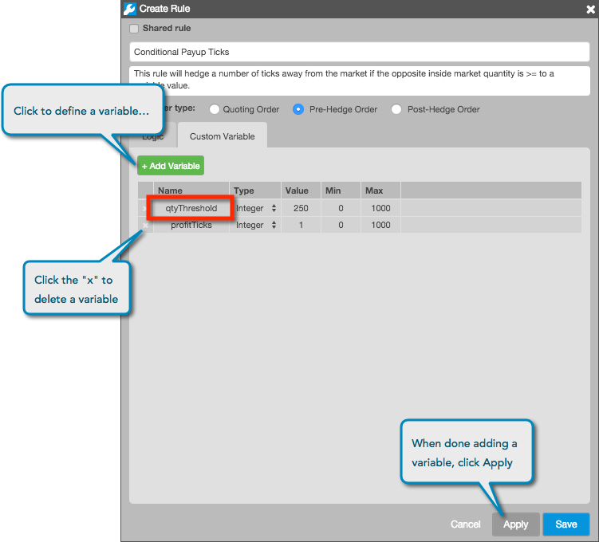
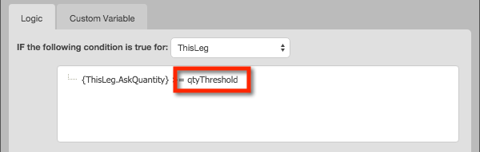

Optionally, you can define and use custom variables in your rules. Using custom variables allows you to change the value of such variables at application time when you are adding the rule to a spread configuration.
To use custom variables, you must first define them using the Custom Variable tab in the Create Rule screen. Click Add Variable to define the variable's parameters (e.g., qtyThreshold)...

...after you click Apply, you can use the variable in your Condition and Action logic:
